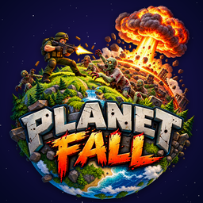

PlanetFall: Zombie Apocalypse Support
Zombie survival on tiny worlds, for iPhone and iPad
Contact
Questions, problems or feedback? Email joel.hernandez.james@gmail.com. Please include your device model, iOS version and what happened. We usually reply within a few days.
Common questions
How do I play?
The left stick walks, the right stick aims and fires. Survive every wave on the planet, then reach the escape rocket to fly to the next world. Call-ins on the left side of the screen bring air strikes, nukes, turrets, gunships, tanks and more; tap one, then tap the planet to place it.
How does co-op work?
Tap CO-OP on the main menu. Co-op uses Apple's Game Center: sign in to Game Center in Settings, then invite friends or be matched with other players (2 to 4). The whole squad has to board the rocket before it can take off.
I bought coins but didn't receive them.
Make sure you're connected to the internet and reopen the game; unfinished purchases are completed when the game starts. Purchases are handled by Apple, so if you were charged and still have nothing, email us with the date of the purchase.
How do I get a refund?
Refunds for App Store purchases are handled by Apple at reportaproblem.apple.com.
Where is my progress saved?
Your coins, level, upgrades, weapons and best scores are saved on your device. Deleting the app deletes them. Leaderboard scores are kept by Game Center.